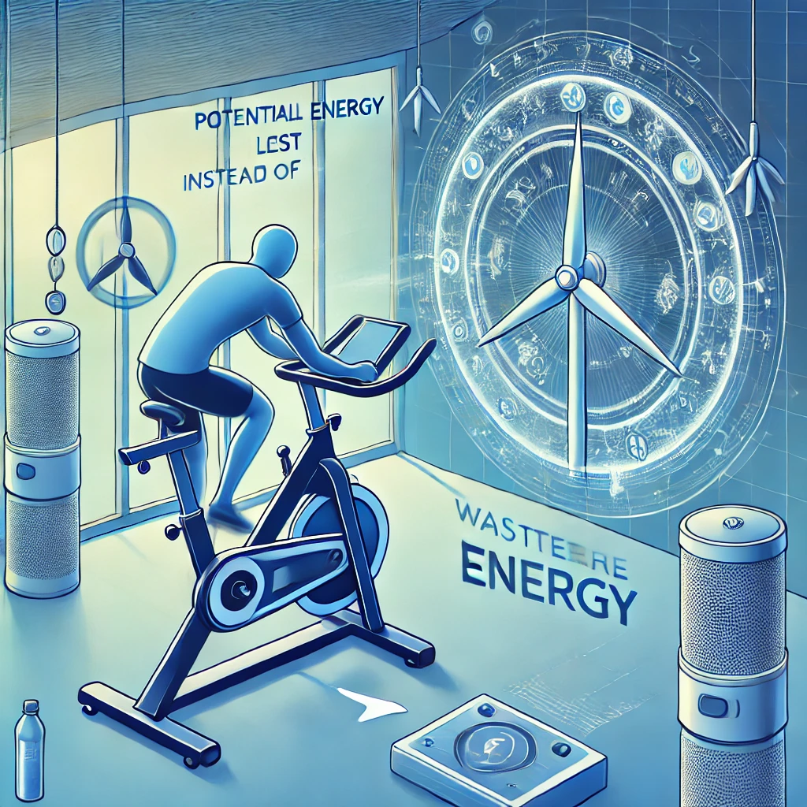

Problema que o FitEnergy Resolve
O desperdício de energia gerada durante o exercício físico é um problema ambiental significativo. O FitEnergy transforma esse esforço em eletricidade renovável, ajudando a reduzir a dependência de fontes de energia não renováveis e promovendo uma maior consciência sobre sustentabilidade.
